CSS (Margin, Padding, Border, box shadow)
Duration 4h (Totally 13)
Basic
1.Add padding for the paragraph from all side(Top, right, bottom, left):
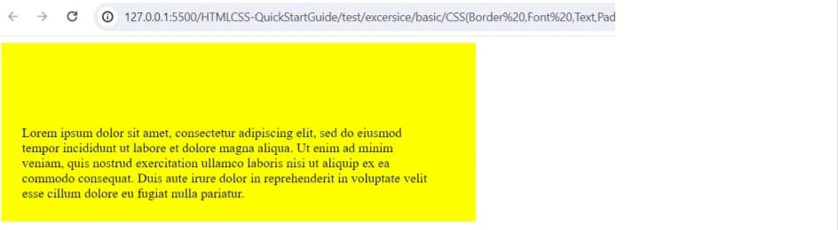2.Add border for the following:
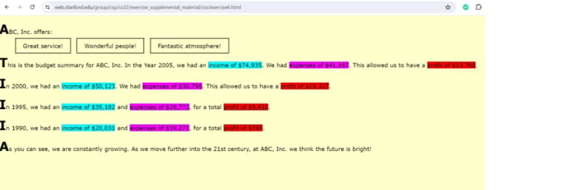3.Border:
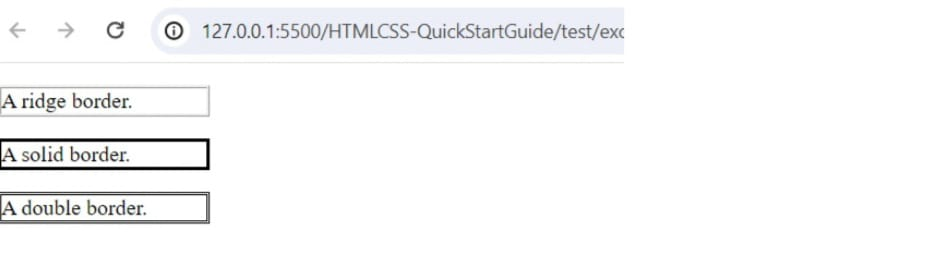4.Add box shadow:
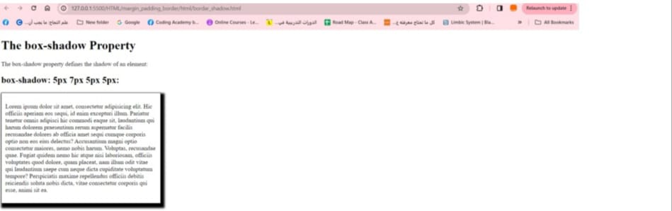Intermediate
5.Add padding and border:
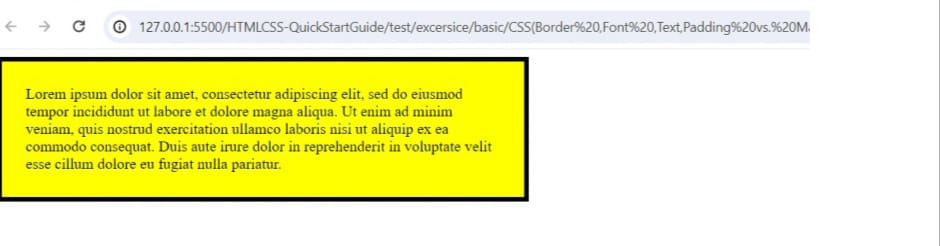6.Margin border, Padding:
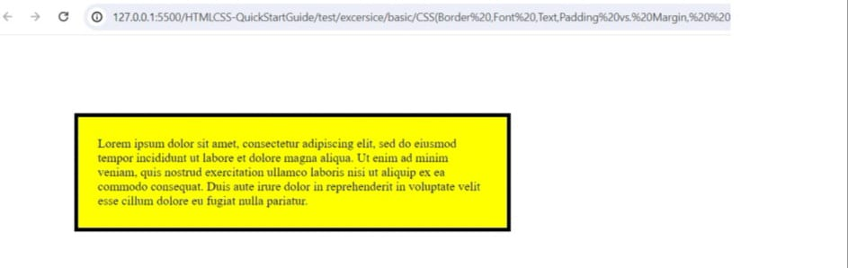Intermediate
7.Text-decoration, text-transform, text-align, font-style:
8.Overflow:
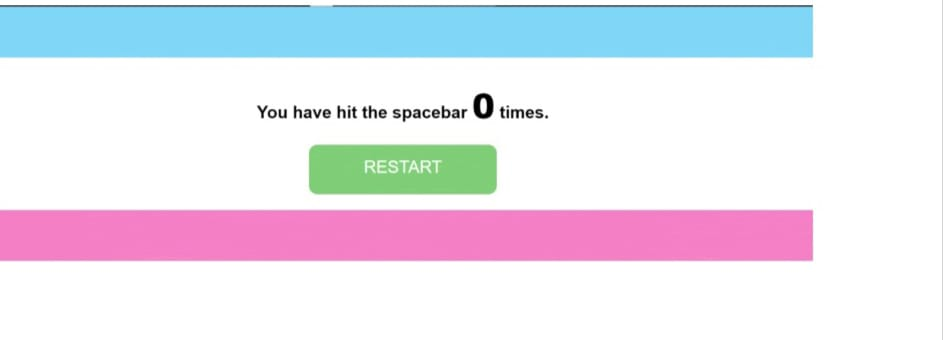Advanced
9.Create the following, based on the following:
1.underline decoration
2.a)div width=400px
b)add scroll for div
3.a)font family= 'Lucida Sans', 'Lucida Sans Regular', 'Lucida Grande', 'Lucida Sans
Unicode', Geneva, Verdana, sans-serif
b)font-size=20px
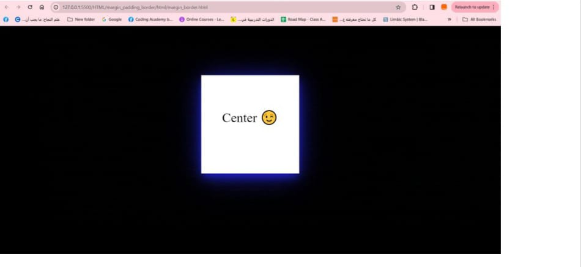Intermediate
5.Add padding and border:
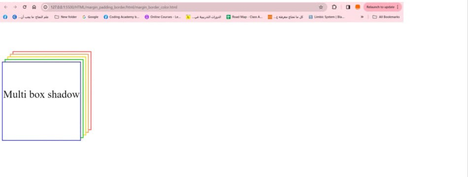6.Margin border, Padding:
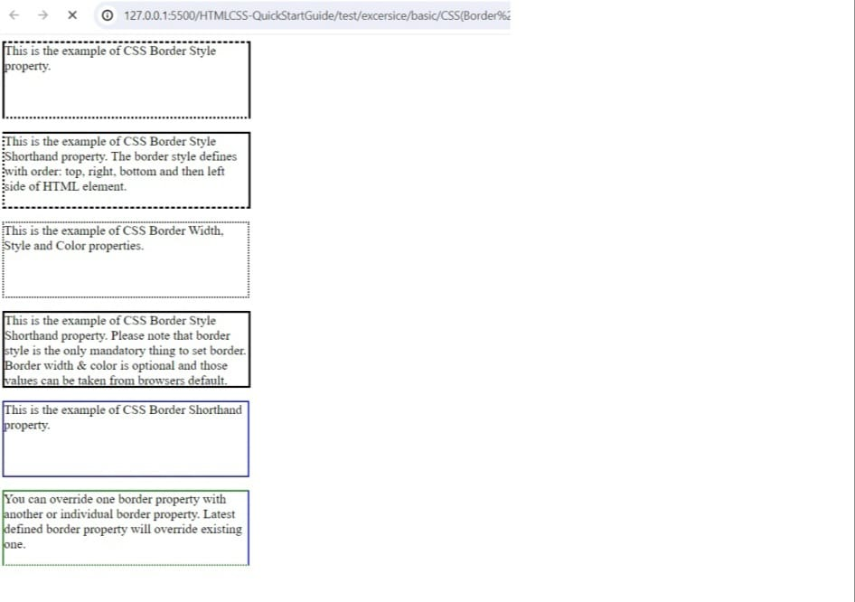Intermediate
7.Text-decoration, text-transform, text-align, font-style:
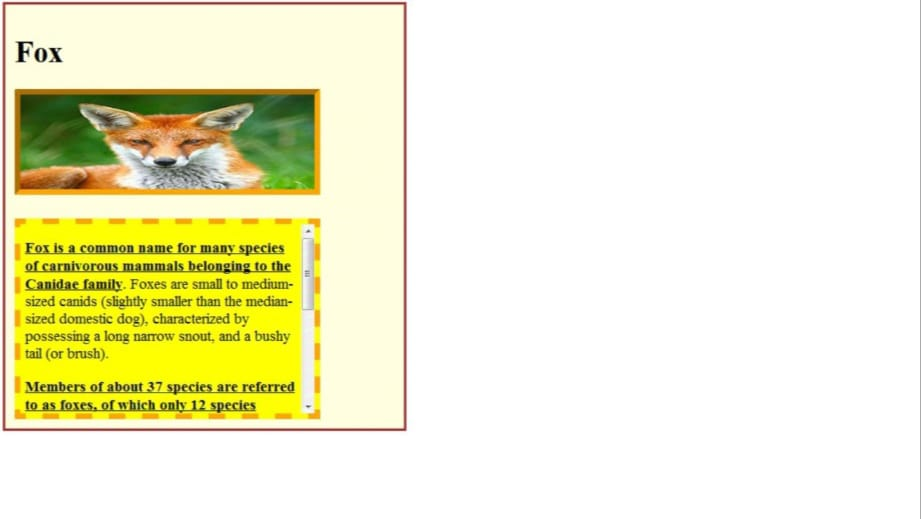8.Overflow:
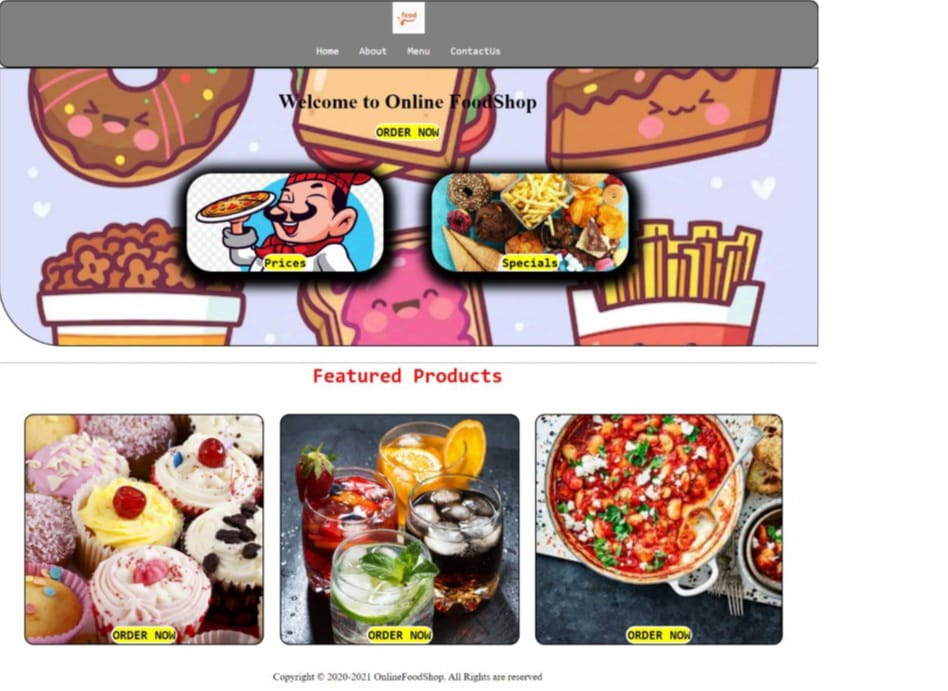Advanced
9.Create the following, based on the following:
1.underline decoration
2.a)div width=400px
b)add scroll for div
3.a)font family= 'Lucida Sans', 'Lucida Sans Regular', 'Lucida Grande', 'Lucida Sans
Unicode', Geneva, Verdana, sans-serif
b)font-size=20px